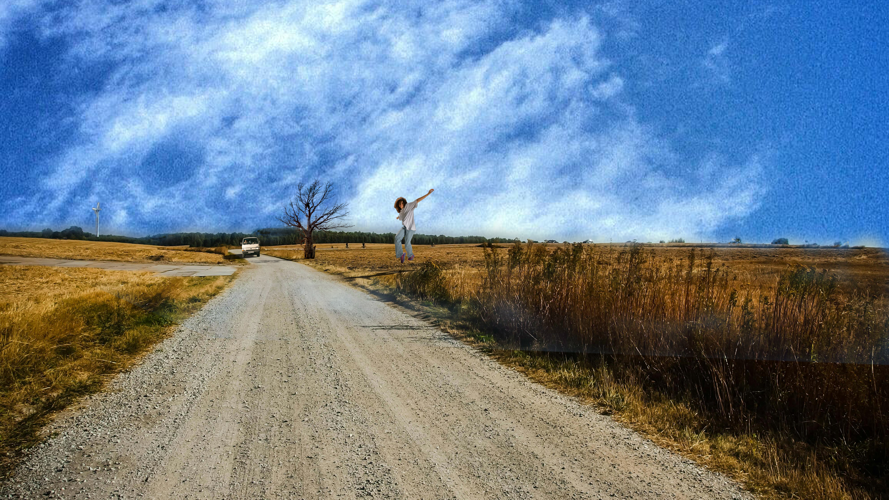

U sedmoj vježbi iz predmeta Digitalni multimedij 1 naučili smo napredne tehnike fotomontaže u Photoshopu. Kroz razne alate za selekciju kao što su Polygonal Lasso, Quick Mask Mode, kanali i maske, izrađivali smo realistične kompozicije. Fokus je bio na preciznom izdvajanju dijelova slika, izradi realističnih sjena i korekciji boja za prirodan izgled. Također smo koristili opcije poput Drop Shadow i Vanishing Point za dodavanje dubine i perspektive. Naučio sam kako integrirati više elemenata u jednu sliku na uvjerljiv način.
